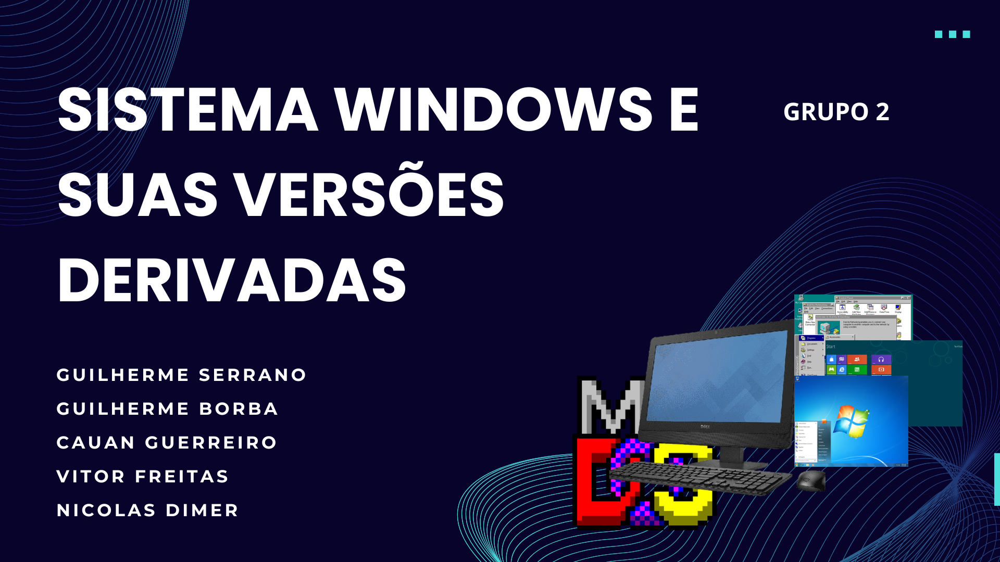

Evolução do Sistema Operacional Windows
Primeiras Versões
As primeiras versões do Windows, como o Windows 1.0 e o Windows 2.0, só funcionavam em partições formatadas com o sistema de arquivos FAT, sendo o FAT16 o mais usado. O Windows 3.x já era compatível com o FAT32, mas exigia a instalação do MS-DOS 7.10 antes.
Windows 95
Lançado em 24 de agosto de 1995, o Windows 95 trouxe muitas mudanças em comparação com as versões anteriores. A interface foi reformulada, com a adição do Menu Iniciar e da barra de tarefas. Além disso, o sistema não precisava mais do MS-DOS para funcionar. As limitações de memória do Windows 3.x foram quase eliminadas, e o multitarefa foi melhorado. O sistema usava o FAT-16 (VFAT), que permitia nomes de arquivos com até 255 caracteres.
Windows 98
Lançado em 25 de junho de 1998, o Windows 98 corrigiu vários problemas do Windows 95, como a integração com a Internet. A interface gráfica e o suporte a USB e a múltiplos monitores também melhoraram. No entanto, devido ao aumento de funcionalidades, o sistema ficou mais lento e instável.
Windows 2000
Lançado em 17 de fevereiro de 2000, o Windows 2000 teve problemas de segurança graves, sendo atacado por worms como Code Red e Blaster, que afetaram milhões de computadores. Esses ataques causaram grandes períodos de inatividade e altos custos de reparo.
Windows ME
Em 14 de setembro de 2000, foi lançado o Windows ME, que, junto com o Windows 2000, foi criticado por ser lento e instável. Ambos foram rapidamente substituídos pelo Windows XP, lançado em 25 de outubro de 2001.
Windows XP
O Windows XP foi o primeiro a oferecer suporte para sistemas de 64 bits e foi desenvolvido com uma nova arquitetura e núcleo. Foi sucedido pelo Windows Vista, que trouxe a interface gráfica Windows Aero.
Windows 7
Lançado em 22 de outubro de 2009, o Windows 7 foi uma versão mais eficiente e prática, com o objetivo de ser mais simples de usar e totalmente compatível com os aplicativos e hardwares que já eram compatíveis com o Windows Vista.
Windows 8
Lançado em 26 de outubro de 2012, o Windows 8 trouxe grandes mudanças para melhorar a experiência em tablets. A nova interface Metro UI foi otimizada para telas sensíveis ao toque e incluiu a Tela Iniciar, com aplicativos e conteúdos atualizados. Também foi criada a Windows Store, para baixar novos softwares.
Windows 8.1
Lançado em 17 de outubro de 2013, o Windows 8.1 foi uma melhoria do Windows 8, trazendo uma Tela Iniciar mais personalizável, novos aplicativos, integração com OneDrive e melhorias na compatibilidade com displays de alta resolução, Wi-Fi Direct e impressoras 3D.
Windows 10
O Windows 10, lançado em 29 de julho de 2015, trouxe mudanças no design em relação ao Windows 8.1. Novas Live Tiles foram adicionadas ao Menu Iniciar, permitindo redimensioná-las. O sistema passou a ser mais integrado e fácil de usar, com melhorias em diversos recursos.
Windows 11
O Windows 11, lançado em 5 de outubro de 2021, trouxe o redesign do menu iniciar e a nova tela de widgets. Este último foi muito criticado devido à falta de funcionalidades em relação ao seu antecessor.
Funcionalidades Windows
O sistema operacional Windows possui uma vasta variedade de funcionalidades que o tornam ideal para o local de trabalho, facilitando a produtividade e a colaboração. Algumas dessas funcionalidades incluem:
- Integração com Microsoft Office: O Windows é otimizado para executar aplicativos do Microsoft Office, como Word, Excel e PowerPoint.
- Suporte a Multitarefa: Permite que os usuários executem vários aplicativos simultaneamente.
- Virtualização: Funcionalidades que permitem executar máquinas virtuais diretamente no Windows.
- Segurança Avançada: O Windows possui diversas funcionalidades de segurança, incluindo o Windows Defender.
- Armazenamento em Nuvem com OneDrive: Integração com o OneDrive para armazenar arquivos na nuvem.
- Acesso Remoto: Funcionalidades como a área de trabalho remota permitem o acesso ao computador de qualquer lugar.
- Personalização da Interface: O Windows permite que os usuários personalizem a interface do sistema de acordo com suas necessidades.
Versões Derivadas
O Windows evoluiu significativamente desde sua primeira versão, com várias edições para diferentes públicos. As versões derivadas incluem:
Windows para Consumidores Finais
Inclui versões como o Windows Home, destinada aos usuários domésticos, e o Windows Starter, que é uma versão mais simples para mercados emergentes.
Versões Corporativas
Versões como o Windows Professional e o Windows Enterprise foram desenvolvidas para empresas, com maior segurança e suporte a domínios e máquinas virtuais.
Versões Técnicas e Especializadas
O Windows Embedded foi projetado para sistemas embarcados e dispositivos específicos, enquanto o Windows IoT foca na Internet das Coisas.
Impacto e Relevância
O impacto do Windows no mercado de sistemas operacionais é indiscutível, marcando uma revolução na inovação tecnológica e na usabilidade. O Windows se tornou a plataforma básica para a popularização dos computadores pessoais, especialmente após o lançamento do Windows 95, que trouxe uma interface gráfica acessível.
Conclusão
A evolução do Sistema Operacional Windows reflete tanto os avanços tecnológicos da Microsoft quanto a transformação da computação pessoal e corporativa. O Windows se adaptou às novas demandas do mercado, incluindo segurança, conectividade e compatibilidade com dispositivos variados. Sua popularidade continua a crescer, consolidando-o como uma plataforma essencial no cenário digital atual.